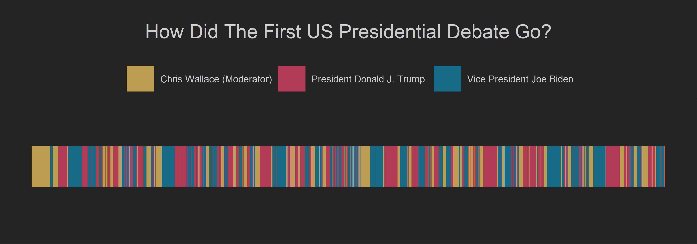
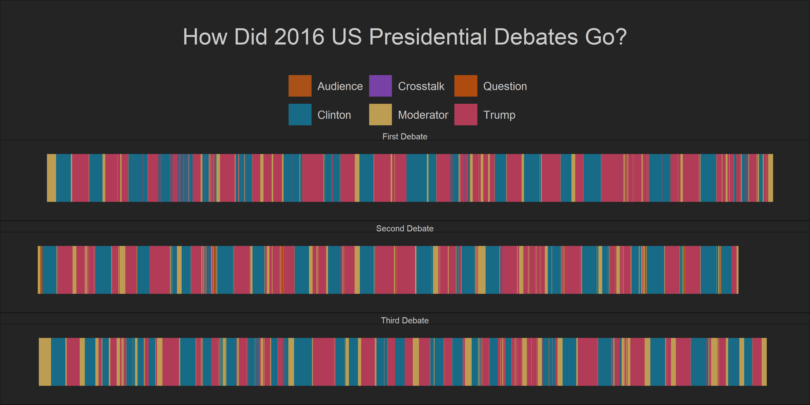
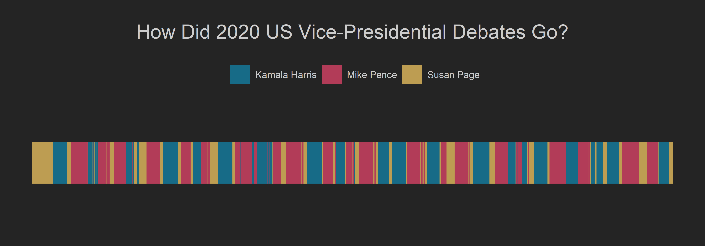
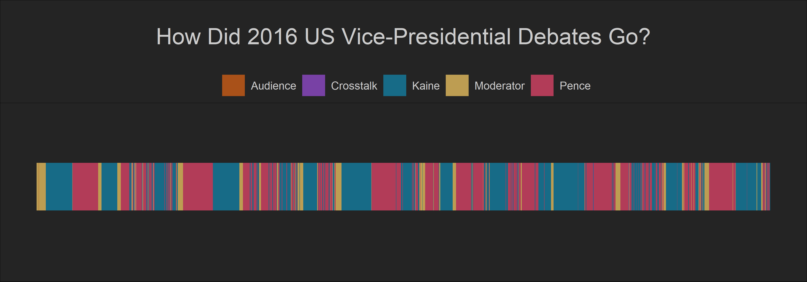

In this post, I looked at how Biden and Trump interrupted each other during the first Presidential debate and compared it with the recent Presidential debates.
Many people watched the first Presidential Debate between Biden and Trump and thought that this debate was chaotic, full of vulgar language, interruptions, and in a word, really ugly! Some people even consider this debate as the worst debate in the modern history of US Presidential Elections! Four years ago, Trump was also a presidential candidate and ran against Hillary Clinton. The Presidential Debates in 2016 were not exceptionally friendly or civilized. So, the question is what made the 2020 first debate unique and chaotic in many people’s minds. In this blog post, I will investigate this question and compare the 2020 and 2016 Presidential debates and the Vice Presidential debates.
library(tidyverse) # metapackage of all tidyverse packages
library(lubridate)
library(readxl)
library(ggthemes)
library(showtext)
library(plotly)
font_add_google("Lobster", "Lobster")
font_add_google("Overpass", "Overpass")
options(repr.plot.width=20, repr.plot.height=15)
biden_col <- '#118ab2'
trump_col <- '#ef476f'
wallace_col <- '#ffd166'
cross_talk_col <- '#06d6a0'
moderator <- '#ffd166'
audience <- '#e36414'
clinton_col <- '#118ab2'
text_col <- 'gray80'
theme_set(theme_void())
theme_update(
legend.position = 'top',
legend.text = element_text(
size = 20,
family = 'Lobster',
color = text_col
),
text = element_text(family = 'Lobster', color = text_col),
plot.title = element_text(
size = 40,
margin = margin(b = 40, t = 50, l = 50),
hjust = 0.5,
family = 'Lobster',
color = text_col
),
plot.caption = element_text(
size = 20,
,
margin = margin(b = 50, t = 50),
family = 'Lobster',
color = text_col
),
plot.background = element_rect(fill = 'gray14'),
panel.background = element_rect(fill = 'gray14')
)Let us look at the first debate between Trump and Biden and how much each candidate used to speak uninterrupted by the other candidate or the moderator. I used this dataset which is available on Kaggle to computed how many seconds Trump and Biden talked without being cut off by the other candidate.
presidential_debate_2020 <- read_delim('presidential_debate_2020.csv',
delim = '\t',
col_types = list(col_character(),
col_character(),
col_character(),
col_character(),
col_integer(),
col_integer(),
col_double(),
col_integer()))
presidential_debate_2020 <- presidential_debate_2020 %>%
mutate(minutes = if_else(nchar(time)<6,paste('00:',time,sep = ''),time),
minutes = paste('2020-09-29',minutes,sep = ''),
minutes = lubridate::ymd_hms(minutes),
speaker = if_else(str_detect(speaker , 'Chris Wallace'),'Chris Wallace (Moderator)',speaker),
) %>%
mutate(minute_start = lag(minutes,n= 1),
duration =minutes - minute_start,
duration = lead(duration,n =1),
seconds_in_end = lead(seconds_in),
text = str_wrap(text,width =30))
presidential_debate_2020[1,5] <- 0
glimpse(presidential_debate_2020)Rows: 788
Columns: 12
$ speaker <chr> "Chris Wallace (Moderator)", "Chris Wallace (~
$ text <chr> "Good evening from the Health\nEducation Camp~
$ url <chr> "https://www.rev.com/transcript-editor/shared~
$ time <chr> "1:20", "2:10", "2:49", "2:51", "2:51", "3:11~
$ seconds_in <int> 0, 130, 169, 171, 171, 191, 241, 293, 322, 32~
$ seconds_spoken <int> 50, 39, 2, 0, 20, 50, 52, 29, 7, 5, 2, 36, 56~
$ words_per_min <dbl> 148.8000, 156.9231, 120.0000, NA, NA, 159.600~
$ num_words <int> 124, 102, 4, 4, 2, 133, 156, 98, 15, 16, 3, 1~
$ minutes <dttm> 2020-09-29 00:01:20, 2020-09-29 00:02:10, 20~
$ minute_start <dttm> NA, 2020-09-29 00:01:20, 2020-09-29 00:02:10~
$ duration <drtn> 50 secs, 39 secs, 2 secs, 0 secs, 20 secs, 5~
$ seconds_in_end <int> 130, 169, 171, 171, 191, 241, 293, 322, 329, ~presidential_debate_2020 %>%
ggplot(aes(
x = seconds_in,
y = 1,
xend = seconds_in_end,
yend = 1,
color = speaker
)) +
geom_segment(size = 40, alpha = 0.7) +
guides(color = guide_legend(override.aes = list(size = 25))) +
scale_color_manual(values = c(wallace_col, trump_col, biden_col)) +
scale_y_continuous(limits = c(0.85, 1.13)) +
labs(
x = '',
y = '',
title = 'How Did The First US Presidential Debate Go?',
#subtitle = 'This plot illustrates how much time each presidential candidate spoke ',
fill = '',
color = '' ) 
This plot clearly shows that there were many interruptions during the first debate! It also shows that it was Trump who interrupted most in the debate. To give it more context, let us compare it to the 2016 Debates between Trump and Clinton. The transcripts of these debates are available in this dataset that I found on Kaggle. However, this dataset does not include information about how many seconds or minutes each candidate spent speaking in the debates. So, I decided to use the number of words each candidate spoke to measure continuity in their speeches.
debate_2016 <- read_csv('presidential_debate_2016.csv')
debate_2016 <-debate_2016 %>%
mutate(Text = as.character(Text),
num_chars = str_length(Text),
num_word = str_count(Text),
Speaker = case_when(Speaker == 'CANDIDATES'~'Crosstalk',
Speaker == 'QUESTION'~'Question',
Speaker %in% c('Cooper', 'Holt','Wallace','Raddatz','Quijano') ~'Moderator',
TRUE ~ Speaker))
presidential_debate_2016 <- debate_2016 %>%
filter(!Speaker %in% c('Kaine','Pence'),
Date != '10/4/16')
first_debate <- presidential_debate_2016%>%
filter(Date == '9/26/16')
second_debate <- presidential_debate_2016 %>%
filter(Date == '10/9/16')
third_debate <- presidential_debate_2016 %>%
filter(Date == '10/19/2016')
glimpse(presidential_debate_2016)Rows: 1,028
Columns: 6
$ Line <dbl> 1, 2, 3, 4, 5, 6, 7, 8, 9, 10, 11, 12, 13, 14, 15,~
$ Speaker <chr> "Moderator", "Audience", "Clinton", "Audience", "M~
$ Text <chr> "Good evening from Hofstra University in Hempstead~
$ Date <chr> "9/26/16", "9/26/16", "9/26/16", "9/26/16", "9/26/~
$ num_chars <int> 1257, 10, 20, 10, 17, 10, 1115, 820, 1018, 171, 15~
$ num_word <int> 1257, 10, 20, 10, 17, 10, 1115, 820, 1018, 171, 15~first_debate<- first_debate %>%
mutate(cumsum_nwords = cumsum(num_word),
cum_sum_lag = lag(cumsum_nwords),
debate = 'First Debate')
first_debate[1,7] <- 0
second_debate<- second_debate %>%
mutate(cumsum_nwords = cumsum(num_word),
cum_sum_lag = lag(cumsum_nwords),
debate = 'Second Debate')
second_debate[1,7] <- 0
third_debate<- third_debate %>%
mutate(cumsum_nwords = cumsum(num_word),
cum_sum_lag = lag(cumsum_nwords),
debate = 'Third Debate')
third_debate[1,7] <- 0
presidential_debates_2016 <- bind_rows(first_debate,second_debate ,third_debate)presidential_debates_2016 %>%
ggplot(aes(
x = cum_sum_lag,
y = 1,
xend = cumsum_nwords,
yend = 1,
color = Speaker
)) +
geom_segment(size = 40, alpha = 0.7) +
guides(color = guide_legend(override.aes = list(size = 18))) +
scale_color_manual(values = c('Moderator' = moderator ,'Trump' = trump_col ,
'Clinton' = clinton_col ,
'Crosstalk' ='#9d4edd',
'Audience' = audience ,
'Question' = '#e85d04')) +
scale_y_continuous(limits = c(0.85, 1.13)) +
labs(
x = '',
y = '',
title = 'How Did 2016 US Presidential Debates Go?',
fill = '',
color = '',
caption =
) +
facet_wrap(~debate,nrow = 3) +
theme(strip.text = element_text(size = 15))
Well, the debates between Trump and Clinton were also wild, but they were less anarchic than the debate between Biden and Trump. For, there were fewer disruptions in those debates compared to what we saw in the 2020 plot.
Now let’s look at the debates between the Vice Presidential candidates. Usually, these debates are more civilized and less heated as they attract less attention.
I found a dataset of the 2020 VP debate on Kaggle. Again, here I used the same approach that I used for the 2016 debate.
vice_presidential_debate_2020 <- read_csv('vice_presidential_debate_2020.csv')
vice_presidential_debate_2020 <- vice_presidential_debate_2020 %>%
mutate(num_chars = str_length(text ),
cumsum_nwords = cumsum(num_chars),
cum_sum_lag = lag(cumsum_nwords))
vice_presidential_debate_2020[1,6] <- 0vice_presidential_debate_2020 %>%
ggplot(aes(
x = cum_sum_lag,
y = 1,
xend = cumsum_nwords,
yend = 1,
color = speaker
)) +
geom_segment(size = 40, alpha = 0.7) +
guides(color = guide_legend(override.aes = list(size = 18))) +
scale_color_manual(values = c("Susan Page" = moderator ,'Mike Pence' = trump_col ,
'Kamala Harris' = clinton_col )) +
scale_y_continuous(limits = c(0.85, 1.13)) +
labs(
x = '',
y = '',
title = 'How Did 2020 US Vice-Presidential Debates Go?',
fill = '',
color = '',
caption =
)
vp_debates <- debate_2016 %>%
filter(Date == '10/4/16') %>%
mutate(cumsum_nwords = cumsum(num_word),
cum_sum_lag = lag(cumsum_nwords))
vp_debates[1,5] <- 0vp_debates %>%
ggplot(aes(
x = cum_sum_lag,
y = 1,
xend = cumsum_nwords,
yend = 1,
color = Speaker
)) +
geom_segment(size = 40, alpha = 0.7) +
guides(color = guide_legend(override.aes = list(size = 18))) +
scale_color_manual(values = c('Moderator' = moderator ,'Pence' = trump_col ,
'Kaine' = clinton_col ,
'Crosstalk' ='#9d4edd',
'Audience' = audience )) +
scale_y_continuous(limits = c(0.85, 1.13)) +
labs(
x = '',
y = '',
title = 'How Did 2016 US Vice-Presidential Debates Go?',
fill = '',
color = '',
caption =
)
Well, we can see that Pence and Kaine cut each other off many times during the VP debate. However, we can also observe that they could speak uninterrupted on some occasions.
If you see mistakes or want to suggest changes, please create an issue on the source repository.
Text and figures are licensed under Creative Commons Attribution CC BY-SA 4.0. Source code is available at https://github.com/mcnakhaee, unless otherwise noted. The figures that have been reused from other sources don't fall under this license and can be recognized by a note in their caption: "Figure from ...".
For attribution, please cite this work as
Nakhaee (2020, Oct. 15). Muhammad Nakhaee: Which Presidential Debate Was More Chaotic?. Retrieved from https://mcnakhaee.com/posts/2020-10-15-which-presidential-debate-was-more-chaotic/
BibTeX citation
@misc{nakhaee2020which,
author = {Nakhaee, Muhammad Chenariyan},
title = {Muhammad Nakhaee: Which Presidential Debate Was More Chaotic?},
url = {https://mcnakhaee.com/posts/2020-10-15-which-presidential-debate-was-more-chaotic/},
year = {2020}
}